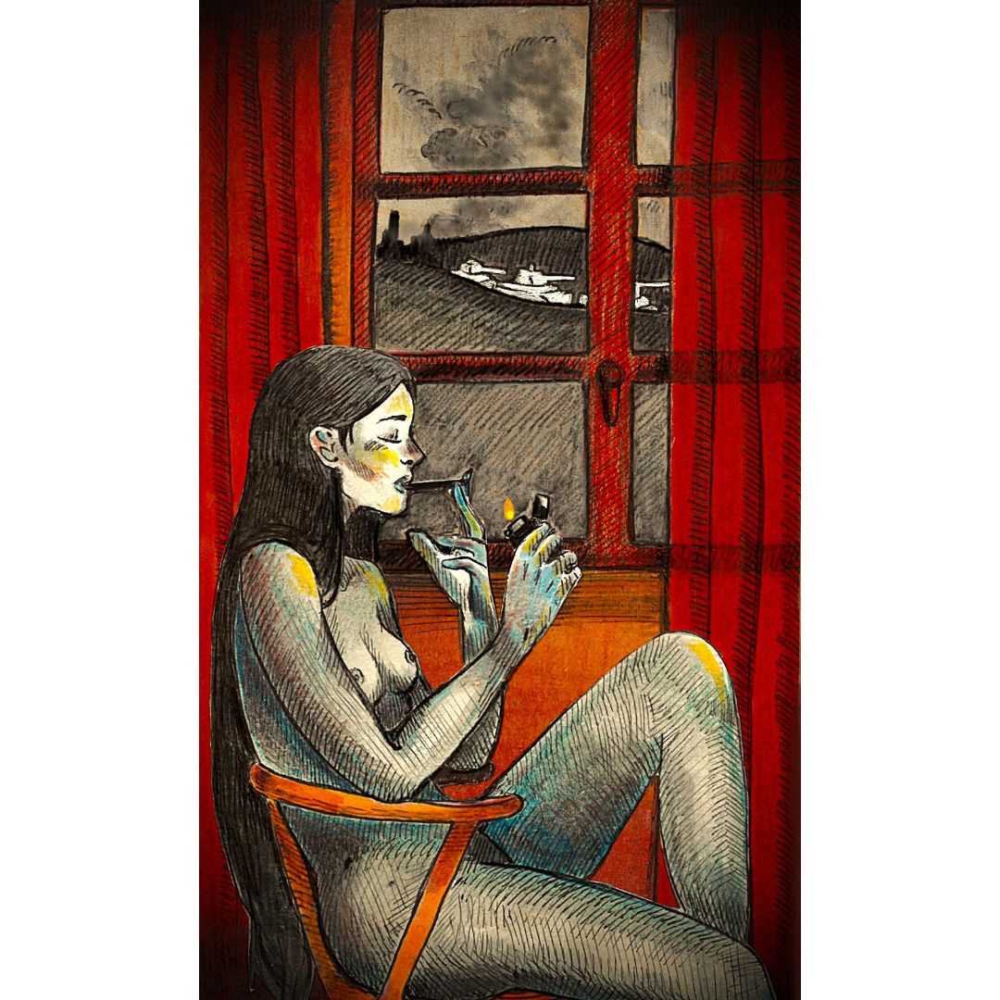

похмелье наступит
arriveranno i postumi
the hangover hits

похмелье наступит - ты завтрак пропустишь
не слушай лгунов, что стоят на распутье
без доли сомнений, без страха, бездумно
ты выпрыгнешь в люк, перебив поток шума
грохочущей стали слепые потоки
тебя поглотят, как земля вертухая
и выплюнут в море
без лодки и груза,
оставив безмолвию на истерзанье.
arriveranno i postumi - salterai la colazione. non ascoltare i bugiardi che indugiano ai crocevia
senza ombra di dubbio, senza paura, sconsideratamente
salterai nella botola, recidendo il flusso del rumore
ciechi torrenti d'acciaio sferragliante
ti inghiottiranno, come la terra inghiotte il secondino
e ti risputeranno in mare
senza barca né carico,
lasciato in pasto al silenzio.
the hangover hits - you skip breakfast. don’t listen to liars standing at crossroads
without a doubt, without fear, mindlessly
you jump down the hatch, cutting the clamor
blind streams of grinding steel
will swallow you, like earth swallows a warden,
and spit you back out into the sea without cargo, without a boat,
left for silence to tear apart.